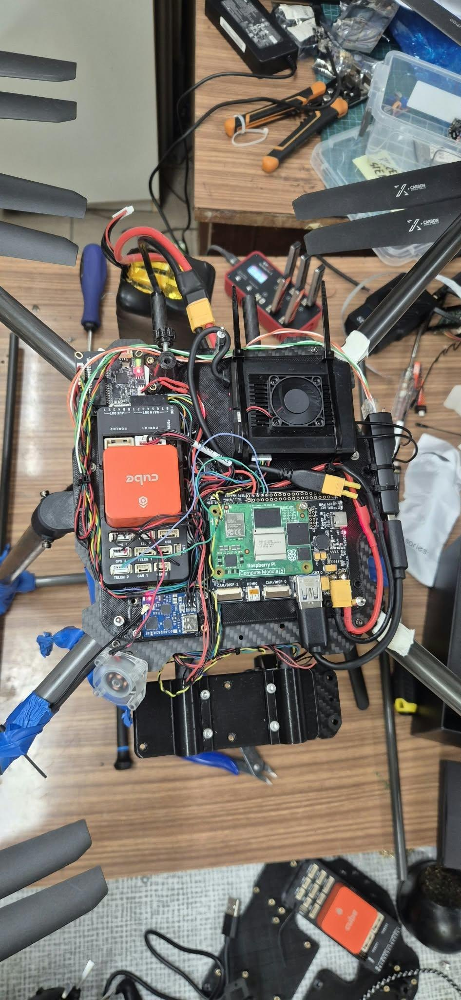

PLATFORMA BAZOWA X8 · WYMIENNE MODUŁY
Octocopter X8: „Woda i Ogień”, „HydroLab” i Moduł Audio
Ciężka platforma wielowirnikowa w układzie koncentrycznym X8 z autopilotem Cube Orange (ArduPilot) oraz komputerem pokładowym Raspberry Pi CM5. Jedna baza lotna współpracuje z wymiennymi modułami zadaniowymi: kierunkowymi mikrofonami w osiach X/Y wskazującymi źródło dźwięku, modułem wizyjnym AI (YOLO na CM5), mobilnym laboratorium HydroLab (pomiar pH, przewodności i temperatury wody) oraz kartą sieciową dalekiego zasięgu.
8 silników
układ X8 · śmigła 15"
4,9–11 kg
masa startowa / maks.
35–45 min
czas lotu (6S 30 Ah)
Cube Orange + ArduPilot
Raspberry Pi CM5 · YOLO
Mikrofony X/Y Audio
HydroLab (pH, EC, temp.)